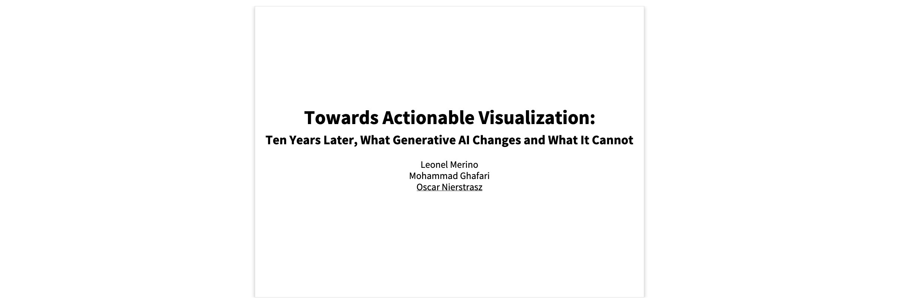
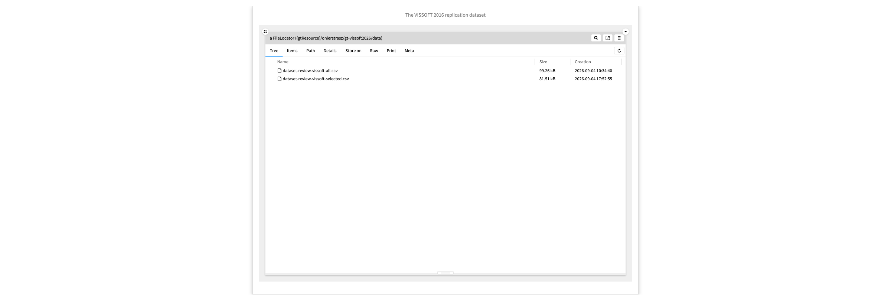
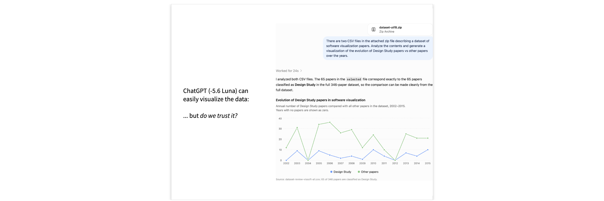
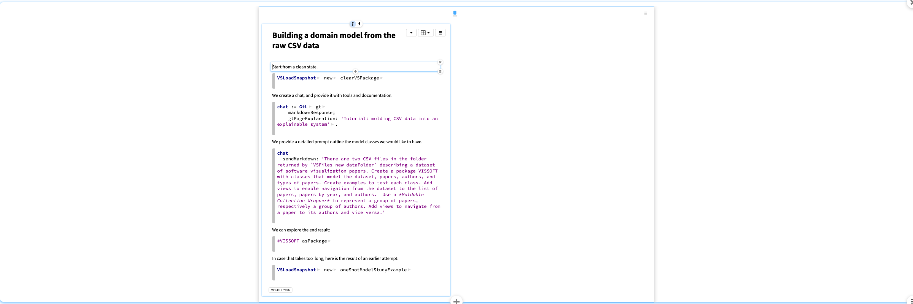
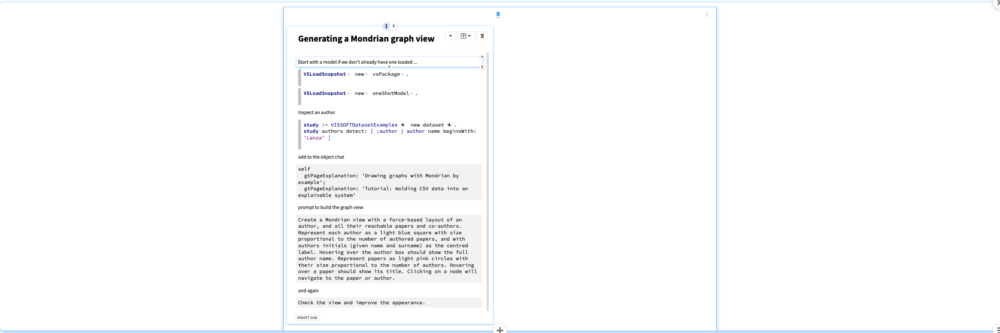

VISSOFT2026Slideshow
Towards Actionable Visualization: Ten Years Later
What Generative AI Changes and What It Cannot.Hi. Ten years ago, Leonel, Mohammad and I presented a paper at VISSOFT that tried to gain insight into classifying software visualizations by studying design study papers presented at previous VISSOFT events. This year's paper reflects on what has changed since then, and in particular, how generative AI impacts the task of creating software visualizations.
I'm not going to present the new paper, but I encourage you to read it. Instead I would like to show you some demos that support some of the arguments in the paper.

Instead of painstakingly analyzing data and handcrafting visualizations, we can put LLMs to work for us. But how can we trust the results they produce? How can we understand the work they perform? How do we interpret the results? Can LLMs help us in the interpretation?
For the original paper we provided a replication dataset consisting of two spreadsheets. The first one lists all the papers from VISSOFT and SOFTVIS up to 2015 and the second one lists the Design Study papers together with more detailed information about just those papers.

We can feed this dataset to an LLM and ask it, for example, to visualize how the Deisgn study papers have evolved over the years. I did this with both ChatGPT and Google Gemini. Here is one of the results.
What's the problem with this?
How did it do the work (in detail)? Does the visualization truly reflect the data? What is the underlying model? How do we interpret the result? What can we do with it?

LLMs are commonly treated as black boxes. We don't know what they are doing; we only know what they say they are doing. The results are fiats. It is hard to connect them to reality.
I'd now like to demo for you some ideas that we have developed at feenk, growing out of our work over the years into software modeling and analysis.
— Model the domain — don't just work with raw data. — Extend the model with composable views — views should be cheap to create, and enable navigation through the model — Model the Chat — expose the LLM interactions using composable views — Expose views to the LLM — enable the LLM to see and interpret the generated views.
We have the CSV data. We have documented experience building a domain model from raw data. We also have documented experience (design patterns) in constructing cheap, composable views on top of the model.
We feed this documentation to the LLM and let it build the model.
When we create the chat we provide it with a number of tools for exploring documentation and evaluating code. We also provide it with detailed instructions on how to build a domain model, based on an existing example.
The prompt explains in some detail what we expect from the model.
When we submit the prompt, we can see what actions are being performed, so we have detailed insight into the chat.
The result is a set of classes including test cases implemented as explorable examples. Following our instructions, the domain objects are enhanced with simple visualizations, or views that can be cheaply created, and are composable . This allows us to explore and navigate through the resulting domain model.
Note that each of these views is expressed in just a few lines of code. You may not think of these as visualizations, but each view is a kind of interactive visualization of some aspect of an object. The key point is that we can dive into these views to explore them and validate our understanding of the objects. When we have more questions, we can quickly create new views.
Note that the chat itself is part of a domain model for the LLM interaction. It is similarly decorated with views that allow us to answer various questions about the chat.

- We start with an empty package. - Show the tools and the documentation. - Start a chat and explain the UI. - Discuss the prompt. - Run the prompt and explore the actions. - Explain that what we see is just an inspector on an object (the chat) with enhanced views. - Show the created classes. - Run the tests. - Explore the dataset instance and see how we can navigate. - In case the result is partially broken, file in the saved version. - Show how the views are cheap to implement and easy to navigate.
Now that we have an initial domain model, we can continue to explore and enhance it by asking questions and adding views that help to answer these questions.
For example, we might like to understand better the relationships between authors and papers. We can inspect a particular author instance and spwan a chat on that object. We feed the chat detailed instructions on how to build graphs using the Mondrian framework within our platform.
We now provide a detailed prompt for the LLM to build a graph showing connected authors and papers. As before we can see not just what the LLM says it is doing, but we can see exactly how it is using the tools, and we can explore these actions in real time.
In the process we may realize that the LLM is having to search for documentation that we did not provide it. The next time we perform a similar task we can explicitly provide that information.
We can also ask the LLM to check and improve the resulting visualization. This means that the LLM is also capable to some extent of interpreting the visualization it produces.
We can also explicity ask the LLM to look at a visualization and provide its interpretation.

- Inspect an author from the current model. - Feed it the Mondrian instructions. - Explore the actions the LLM is performing. - Depending on the result, ask the LLM to improve the result. - Switch to the stored example with Mondrian graphs. - Explore a paper and its graph, and ask the object chat to interpret the result. - Show that the chat is actually looking at the view and interpreting it.
We can inspect the slideshow and ask a chat: "Provide me with a short list of lessons summarizing this slideshow."
ChatGPT generated Lessons from the slideshow
- Generative AI can accelerate visualization work, replacing much of the manual data analysis and visualization construction.
- A plausible visualization is not automatically trustworthy: we need to understand its data basis, underlying model, process, and interpretation.
- Model the domain, not just the raw data. A structured domain model makes results inspectable, testable, and easier to navigate.
- Use cheap, composable interactive views to explore the model incrementally and validate what a visualization means.
- Make LLM work observable. Exposing prompts, tool calls, intermediate actions, and generated examples turns an opaque chat into something that can be examined.
- Let LLMs inspect and interpret views too, while retaining human oversight; this supports iterative creation, critique, and improvement of visualizations.
The central message of VISSOFT2026Slideshow
is that AI becomes more actionable for visualization when it is embedded in an explorable, evidence-oriented modeling environment—not treated as a black box.